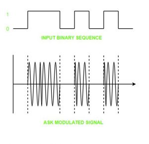
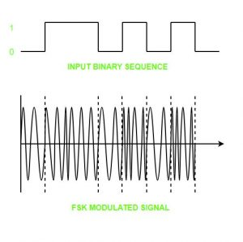
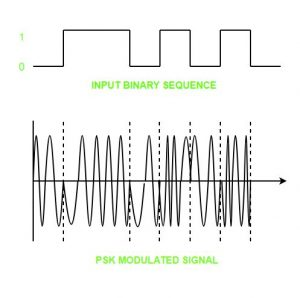

Digital Signal – A digital signal is a signal that represents data as a sequence of discrete values; at any given time it can only take on one of a finite number of values.
Analog Signal – An analog signal is any continuous signal for which the time varying feature of the signal is a representation of some other time varying quantity i.e., analogous to another time varying signal.
The following techniques can be used for Digital to Analog Conversion:
1. Amplitude Shift keying – Amplitude Shift Keying is a technique in which carrier signal is analog and data to be modulated is digital. The amplitude of analog carrier signal is modified to reflect binary data.
The binary signal when modulated gives a zero value when the binary data represents 0 while gives the carrier output when data is 1. The frequency and phase of the carrier signal remain constant.

Advantages of amplitude shift Keying –
- It can be used to transmit digital data over optical fiber.
- The receiver and transmitter have a simple design which also makes it comparatively inexpensive.
- It uses lesser bandwidth as compared to FSK thus it offers high bandwidth efficiency.
Disadvantages of amplitude shift Keying –
- It is susceptible to noise interference and entire transmissions could be lost due to this.
- It has lower power efficiency.
2. Frequency Shift keying – In this modulation the frequency of analog carrier signal is modified to reflect binary data.
The output of a frequency shift keying modulated wave is high in frequency for a binary high input and is low in frequency for a binary low input. The amplitude and phase of the carrier signal remain constant.

Advantages of frequency shift Keying –
- Frequency shift keying modulated signal can help avoid the noise problems beset by ASK.
- It has lower chances of an error.
- It provides high signal to noise ratio.
- The transmitter and receiver implementations are simple for low data rate application.
Disadvantages of frequency shift Keying –
- It uses larger bandwidth as compared to ASK thus it offers less bandwidth efficiency.
- It has lower power efficiency.
3. Phase Shift keying – In this modulation the phase of the analog carrier signal is modified to reflect binary data.The amplitude and frequency of the carrier signal remains constant.

It is further categorized as follows:
- Binary Phase Shift Keying (BPSK):
BPSK also known as phase reversal keying or 2PSK is the simplest form of phase shift keying. The Phase of the carrier wave is changed according to the two binary inputs. In Binary Phase shift keying, difference of 180 phase shift is used between binary 1 and binary 0.This is regarded as the most robust digital modulation technique and is used for long distance wireless communication.
- Quadrature phase shift keying:
This technique is used to increase the bit rate i.e we can code two bits onto one single element. It uses four phases to encode two bits per symbol. QPSK uses phase shifts of multiples of 90 degrees.It has double data rate carrying capacity compare to BPSK as two bits are mapped on each constellation points.
Advantages of phase shift Keying –
- It is a more power efficient modulation technique as compared to ASK and FSK.
- It has lower chances of an error.
- It allows data to be carried along a communication signal much more efficiently as compared to FSK.
Disadvantages of phase shift Keying –
- It offers low bandwidth efficiency.
- The detection and recovery algorithms of binary data is very complex.
- It is a non coherent reference signal.
Reference –
Digital-to-analog converter – Wikipedia